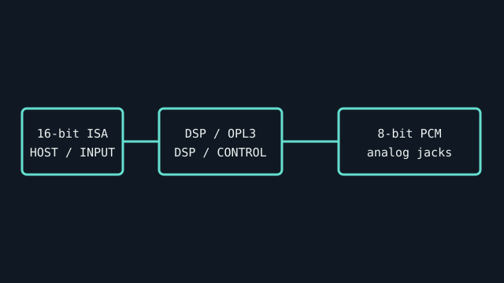

[ INDIVIDUAL COMPONENT // SOUND HARDWARE ]
Creative Sound Blaster Pro 2.0 (CT1600)
Creative’s CT1600 Sound Blaster Pro 2 is an ISA DOS-era card identified by the CT1600 board/model number. The card is distinct from mono Sound Blaster Pro and later CT models.

IDENTIFICATION: Match the complete printed model, revision, bundled breakout, and accessory markings. Specs below describe this named model; family-level variants are not assumed interchangeable.
Specifications
| Catalog subcategory | ISA legacy sound cards |
|---|---|
| Product ID | Creative Sound Blaster Pro 2.0, CT1600 |
| Bus / host | 16-bit ISA connector; legacy systems configure the card’s I/O, IRQ, and DMA resources. |
| Connectors and I/O | 3.5 mm line/speaker output, microphone input, line input, DA-15 game/MIDI port, volume control, and board headers for CD audio / Panasonic CD-ROM. Confirm exact header population on the board revision. |
| Chipset / conversion / protocol | 8-bit PCM; stereo playback up to 22.05 kHz and mono capture at up to 44.1 kHz are documented Sound Blaster Pro 2 capabilities. Yamaha YMF262 OPL3 FM synthesizer; mixer/DSP board revisions should be read from chip markings. |
| Drivers / operating systems | Creative supplied DOS configuration/diagnostic software and Windows 3.x drivers. No current Windows support is asserted; DOS game compatibility depends on IRQ/DMA settings and application expectations. |
| Variant compatibility | CT1600 is the Sound Blaster Pro 2 revision, with OPL3 stereo FM. It is not interchangeable with CT1330/CT1340 boards or later Pro 2 variants; CD-ROM interface and DSP revisions vary. |
Service & preservation
Record CT1600 silk-screen, DSP and OPL3 chip markings, jumpers, and CD-ROM header before operation. Preserve the original Creative driver disk image and test each input/output separately; never change ISA jumpers while powered.
Identification and compatibility checks
- Photograph the product/model label, board silkscreen/revision, connector faces, cable assemblies, and accessory part numbers before installation.
- Check electrical bus and host slot or USB/MIDI protocol support against the exact manual; connector shape alone does not establish compatibility.
- For analog I/O, confirm line/mic/instrument level, phantom-power behavior, channel map, and direction from the model-specific documentation before connecting equipment.
- When software or driver support is uncertain, preserve the last known-good installer and document tested host OS, driver version, and device identifier.
Primary manufacturer & standards sources
- Creative Sound Blaster Pro 2.0 original disks (archived)Original Creative installation media, utilities, and model-era documentation.
- Creative Sound Blaster Pro User Reference Manual (archival scan)Manufacturer-authored reference manual; match CT1600 markings and the relevant revision.
- Creative Sound Blaster support archiveManufacturer legacy support and driver archive.
Source selection is model-specific where an original manual or vendor product/support page exists. Archived scans preserve manufacturer documentation; operating-system claims are limited to what the cited product/manual materials identify.